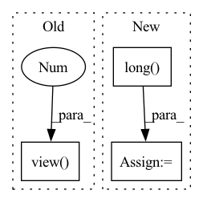

Pattern ID :28134

Before Change
return torch.mean(loss_hard)
def simple_cross_entropy(self, logits, labels):
loss = self.criteria(logits, labels).view(-1)
return torch.mean(loss)
After Change
return torch.mean(loss_hard)
def simple_cross_entropy(self, logits, labels):
labels = labels.long()
loss = self.simple_criteria(logits, labels).view(-1)
return torch.mean(loss)
In pattern: SUPERPATTERN
Frequency: 3
Non-data size: 3
Instances
Fragment ID: 83073554
Project Name: amrelsersy/pointpainting
Commit Name: 9f8f6a8e439678981569e32998079113e0c58622
Time: 2021-05-16
Author: amrelsersay@gmail.com
File Name: model/ohem_loss.py
M Class Name: OhemCELoss
N Class Name: OhemCELoss
M Method Name: simple_cross_entropy(3)
N Method Name: simple_cross_entropy(3)
M Parent Class: nn.Module
N Parent Class: nn.Module
M File Name: model/ohem_loss.py
N File Name: model/ohem_loss.py
M Start Line: 31
M End Line: 31
N Start Line: 35
N End Line: 36
'>
Before Change
// comptute hard codevector distribution (one hot)
codevector_idx = hidden_states.argmax(dim=-1)
update_values = torch.ones_like(codevector_idx.view(-1, 1), dtype=hidden_states.dtype)
codevector_probs = hidden_states.new_zeros(*hidden_states.shape).scatter_(
-1, codevector_idx.view(-1, 1), update_values
After Change
hidden_states = hidden_states.view(batch_size * sequence_length * self.num_groups, -1)
codevector_idx = hidden_states.argmax(dim=-1)
hard_probs = torch.nn.functional.one_hot(codevector_idx.long(), num_classes=self.num_vars).view(
batch_size * sequence_length, self.num_groups, -1
)
code_perplexity = self._compute_perplexity(hard_probs.float(), mask_time_indices)
soft_probs = torch.softmax(
hidden_states.view(batch_size * sequence_length, self.num_groups, -1).float(),
dim=-1,
)
prob_perplexity = self._compute_perplexity(soft_probs, mask_time_indices)
if self.training:
// sample code vector probs via gumbel in differentiateable way
codevector_probs = _ipu_gumbel_softmax(hidden_states.float(), tau=gumbel_temperature, hard=True).type_as(
hidden_states
)
else:
codevector_probs = hard_probs.type_as(hidden_states)
codevector_probs = codevector_probs.view(batch_size * sequence_length, self.num_groups, -1)
codebook = self.codevectors[0, :, :]
'>
Fragment ID: 83073556
Project Name: huggingface/optimum-graphcore
Commit Name: 2ec4ed72ea362414d20c9b112072f3aa7b3d399a
Time: 2022-07-29
Author: 91201457+thorinf@users.noreply.github.com
File Name: optimum/graphcore/models/wav2vec2/ipu_gumbel_vector_quantizer.py
M Class Name: IPUWav2Vec2GumbelVectorQuantizer
N Class Name: IPUWav2Vec2GumbelVectorQuantizer
M Method Name: forward(4)
N Method Name: forward(4)
M Parent Class: Wav2Vec2GumbelVectorQuantizer
N Parent Class: Wav2Vec2GumbelVectorQuantizer
M File Name: optimum/graphcore/models/wav2vec2/ipu_gumbel_vector_quantizer.py
N File Name: optimum/graphcore/models/wav2vec2/ipu_gumbel_vector_quantizer.py
M Start Line: 68
M End Line: 102
N Start Line: 80
N End Line: 110
'>
Before Change
tmp2 = torch.masked_select(input_ids_ner_reshape, mask.bool())
// n(选出来的关系数字) * max_length
// n >> batch_size, 因为一句话中有多个关系
tmp3 = tmp2.view(-1, max_length)
// 拼接 0
tmp4 = torch.cat((tmp3, cat_zero), 1)
// 拼接 0
input_ids_ner = torch.cat((tmp4, cat_zero), 1)
After Change
results_list = results_np.tolist()
attention_position_list = attention_position_np.tolist()
predict_relation_list = relation_ids.long().tolist()
input_ids_list = input_ids_ner.tolist()
processed_results_list = []
'>
Fragment ID: 83073547
Project Name: zjunlp/openue
Commit Name: aab5c330dc47a5099aaf25907950602ab8e8b652
Time: 2021-09-14
Author: 852975133@qq.com
File Name: src/openue/models/model.py
M Class Name: Inference
N Class Name: Inference
M Method Name: forward(2)
N Method Name: forward(2)
M Parent Class: torch.nn.Module
N Parent Class: torch.nn.Module
M File Name: src/openue/models/model.py
N File Name: src/openue/models/model.py
M Start Line: 225
M End Line: 331
N Start Line: 220
N End Line: 324